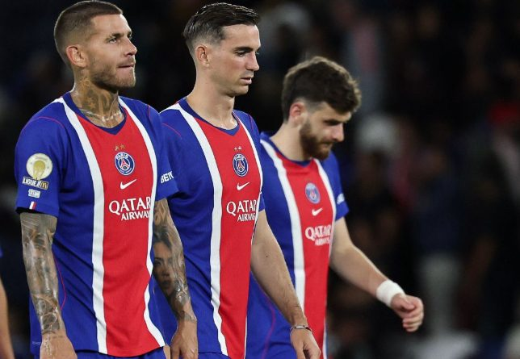
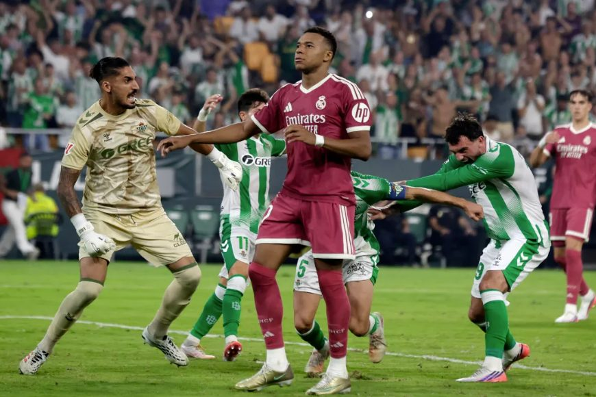
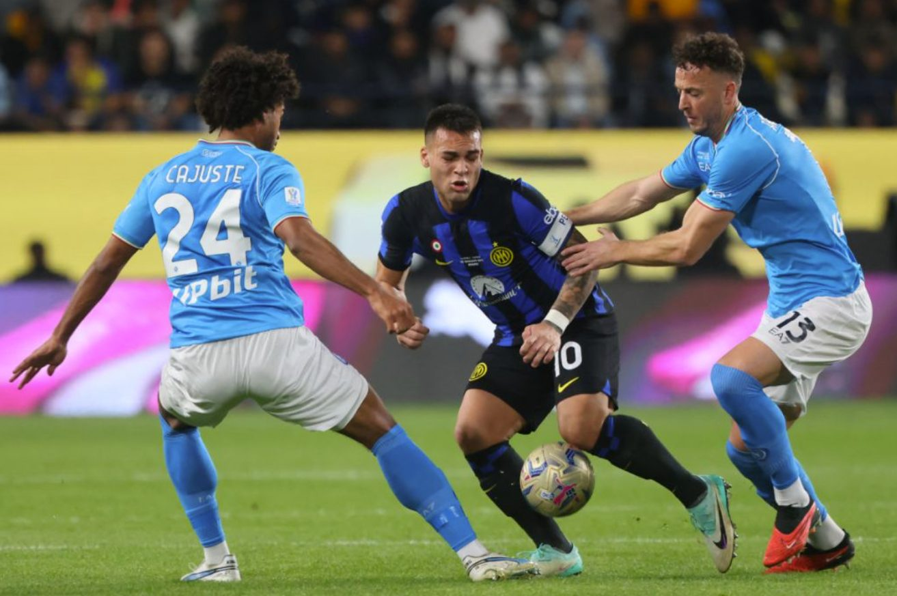
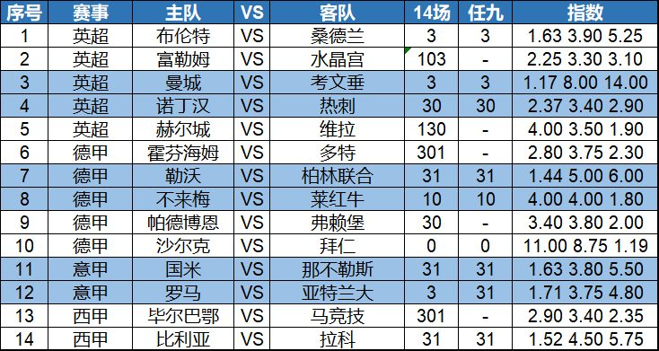

今天是英超德甲意甲西甲等，宝哥给大家带来14场和任九初步观点，希望能帮助大家中奖！
今天火线三档：6点日职日乙K联赛等，9点半德甲英超等，晚场五大联赛沙特联等！
昨晚爆出多场冷门！法甲卫冕冠军大巴黎主场1-2不敌摩纳哥，新赛季3轮联赛2平1负没有胜绩，如果再加上法国超级杯，恩里克的球队连续亢奋两个赛季后，似乎突然失去了赢球的动力。马尔基奥尼虽然为大巴黎首开纪录，但随后摩纳哥连入两球逆转。大巴黎连续3轮法甲都是丢两球，球队防守存在问题。

西甲中，穆里尼奥的皇马也输球了，客场0-1不敌克星皇家社会。第81分钟，替补上场的帕洛特打进制胜球。尽管开局3连胜，但皇马的对手实力都不是很强，一旦遇上同为3连胜开局的贝蒂斯，穆里尼奥的皇马就被打出了原形。

今天多场焦点赛事，首选关注意甲新老冠军间的较量，2胜的国米主场迎战1胜1负的那不勒斯。其中那不勒斯上轮主场1-2不敌科莫，爆出冷门。但要注意的是，之前10次交锋，国米3胜5平2负，被对手战平的概率高达5成。这次要提防再次握手言和。

另一场关注英超，诺丁汉森林主场迎战热刺。两队上赛季都是勉强保级。新赛季，诺丁汉森林1平1负开局，但2-2战平利物浦的表现还是不错。热刺则是两连败开局，且一球不进。这样的两支球队相遇，我认为会力争3分。
以下是今天的14场和任九推荐：

14场：3、103、3、30、130、301、31、10、30、0、31、3、301、31
任九：3、-、3、30、-、-、31、10、-、0、31、3、-、31
欢迎大家收藏宝哥首页，请分享给好友或转发到朋友圈，让更多人看到我。
安卓用户可以下载APP，更便捷看到宝哥每天的动态！